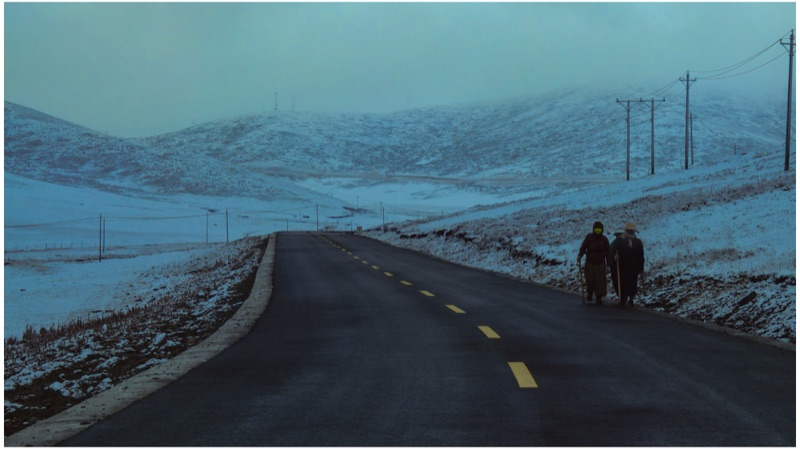
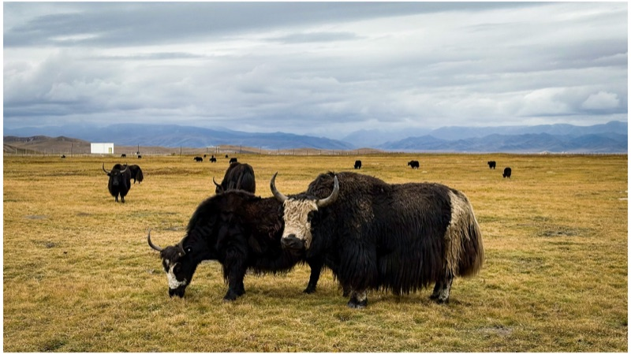
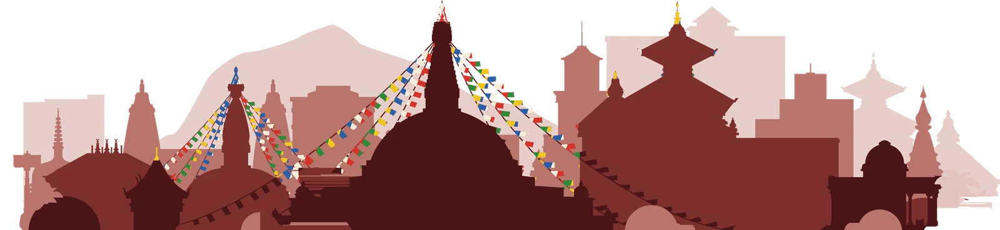
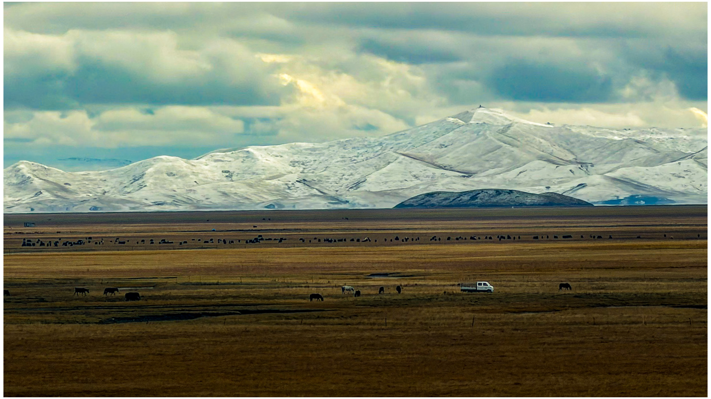

Plogs
Walking with the wind, Maqu, Eastern Tibetan Plateau.
27 photographs ↗






Prajwal Khanal
PhD researcher, Faculty of Geo-Information Science and Earth Observation (ITC), University of Twente
27.72° N, 85.32° E · 1 312 m → 52.22° N, 6.89° E · 44 m
I model soil–vegetation–atmosphere interactions, with a focus on water and carbon fluxes. My work spans both ends of the modelling spectrum: process-based land surface models and data-driven deep learning.


Streamlit app showing satellite and weather signals before roadside verge fires (bermbrand) at 10 sites along Dutch national roads.
Fire vulnerability, site S01 on the A28 near Harderwijk · all 10 sites ↗
A drought-stress dashboard that four food-forest farms (73 ha) have used since early 2026. It reads the WUNDER weather and soil moisture loggers so that the farmers can follow drought as it develops.
Root-zone soil moisture and where stress begins, field 1 · open the app ↗
Faculty of Geo-Information Science and Earth Observation (ITC), University of Twente, and Planet Labs, Haarlem, the Netherlands 52.22° N, 6.89° E · 44 m / 52.38° N, 4.64° E · 8 m
Max Planck Institute for Biogeochemistry, Jena, Germany 50.91° N, 11.57° E · 210 m
Chair of Hydrology and River Basin Management, Technical University of Munich 48.15° N, 11.57° E · 523 m
Jena-Geos Ingenieurbüro GmbH, Munich, Germany 48.14° N, 11.58° E · 524 m
Executive Consulting Engineering and Planner (ECEP), Lazimpat, Kathmandu, Nepal 27.72° N, 85.32° E · 1 312 m
Client: Department of Water Supply and Sanitation, Government of Nepal.
University of Twente and Planet Labs, the Netherlands 52.22° N, 6.89° E · 44 m / 52.38° N, 4.64° E · 8 m
Technical University of Munich, Germany 48.15° N, 11.57° E · 523 m
Institute of Engineering (IOE), Tribhuvan University, Nepal 27.68° N, 85.32° E · 1 307 m
Loading the publication list…
Also on Google Scholar and ORCID.
48.15° N, 11.57° E · 523 m
27.68° N, 85.32° E · 1 307 m
48.15° N, 11.57° E · 523 m
Lalitpur, Nepal 27.66° N, 85.32° E · 1 333 m
52.22° N, 6.89° E · 44 m
27.68° N, 85.32° E · 1 307 m
The quickest way to reach me is by email. I am happy to hear about collaborations, data requests, or questions about any of the papers.
Sagarmatha
The turquoise lake
that longs to belong to the ocean
trapped to see
dazzling face of the Everest.The climbers from the world over
come to see their haggard faces
in the clear light of her crystal eyes
before facing the forehead of the SkyA hope
that someday I shall sprout
like a tree
on the edge of a remote hillside.A hope
someday a Queen-of-the-Night
shall bloom in my chest
and suck all the smoke
I have inhaled
in these malignant cities.A hope that someday
a just born brook shall clean
and wash
bacteria of greed in me.A hope that someday
a Buddha meditating in the niche of a cairn
by the heap of the city
garbage shall shake his limbs
and walk away towards a village of eternity
to take another birth
to save me
from the shame of becoming a glacier.
Dhaulagiri Circuit explore in 3D ↗
Om Mani Padme Hum · Essence of Universe on YouTube
Himalayaहिमालयहिम (snow) को आलय (house)
warming 1.3× the global average
mean annual °C
shaded: 10–90 % of the models · hover, or click to pin a year
Himalaya, 3 088–8 848 m: the mean of six ERA5-Land points along the profile on the left, year by year, 1981–2024. Thin line: each year; thick line and shading: 9-year running mean, coloured from its coldest (1981) to its warmest (2024) value.
Warming 1981–2024: +0.28 °C per decade here; +0.21 °C for the world, land and ocean (NASA GISTEMP v4): 1.3× the global average.
Snow days: days with at least 5 cm of snow on the ground, ERA5-Land, mean of the four points without glacier (3 088–5 915 m).
Snow days in 2050, a rough estimate: in ERA5-Land each extra 1 °C in a year's mean has meant about 44 fewer snow days (±3) at these points; applied to each pathway's median warming from 2024, starting from the 2015–2024 mean of 93 days. Hover the graph for any year. Not a snow model: it assumes the past link holds, uses Nepal-wide warming (the Himalaya warm faster) and ignores changes in snowfall.
2025–2050: CMIP6 multi-model projections for Nepal under a low (SSP1-2.6) and a high (SSP5-8.5) emission pathway (World Bank Climate Change Knowledge Portal, 0.25°), as change from 1995–2014, joined to the 9-year mean at 2024; lines are each pathway's median and the shaded bands its 10th to 90th percentile across the models; 11-year means. These are for Nepal as a whole; the Himalaya have warmed faster than that.
ERA5-Land: Muñoz-Sabater et al., 2021, Earth Syst. Sci. Data, via Open-Meteo. GISTEMP v4: Lenssen et al., 2024, J. Geophys. Res. Atmos. CMIP6: Eyring et al., 2016, Geosci. Model Dev.